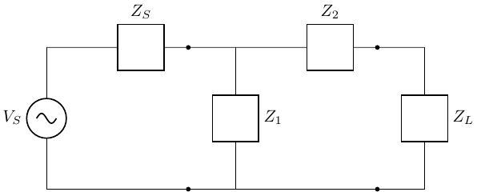
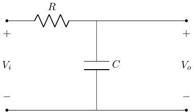
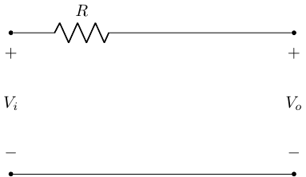
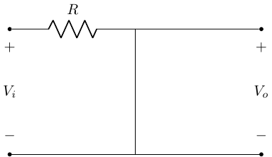
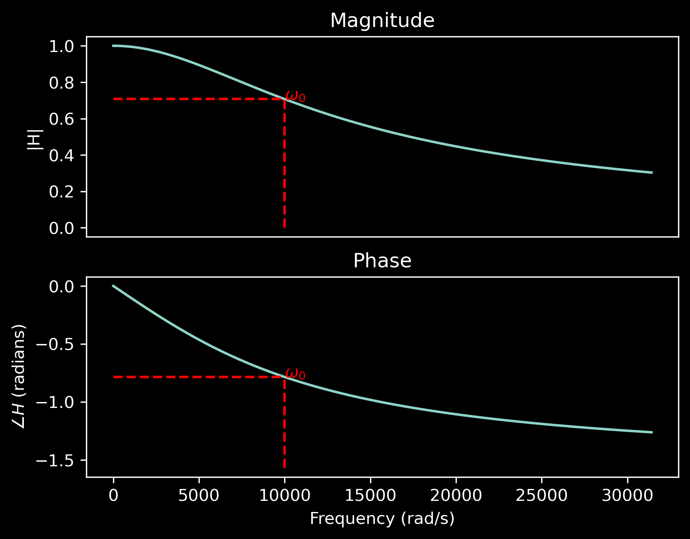
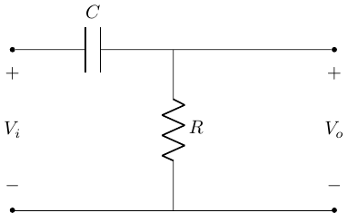
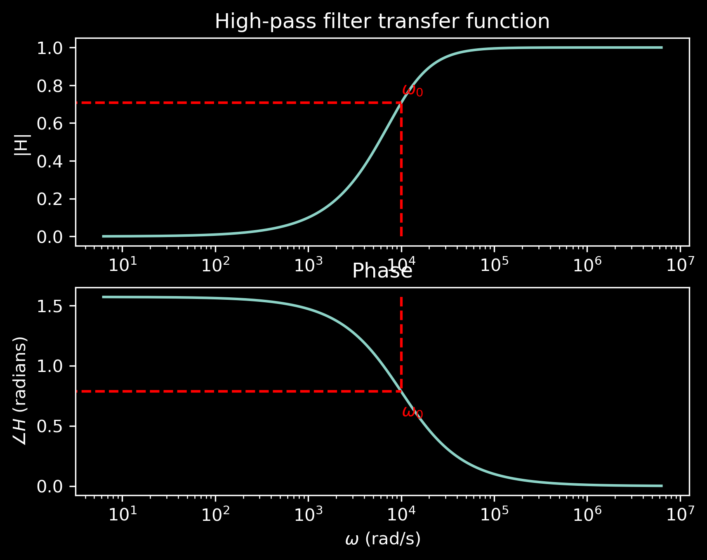
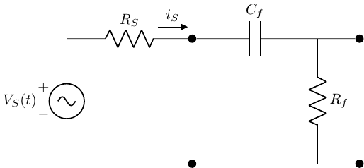
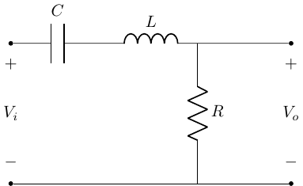
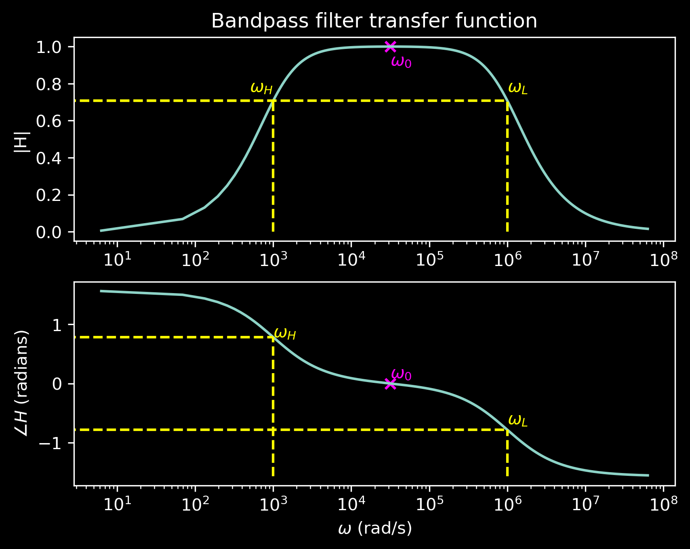

Filters
BME253L - Fall 2025
Overview
The frequency response of a circuit is a measure of the variation of a load-related voltage/current signal as a function of the frequency content of the source signal.
Our goal is to evaluate the modulation of an input (voltage) signal by a circuit with frequency-dependent behavior leading to a frequency-dependent output (voltage) signal.
Circuit Block Diagram

Generalized circuit block diagram with a source (input signal), a filter (circuit with frequency-dependent behavior), and a load (output signal).
Transfer Function
A transfer function is a mathematical representation of the relationship between the input and output of a system as a function of frequency.
It describes how a filter modifies the amplitude and phase of the input signal to produce the output signal.
\[ \bar{H}(j\omega) = \frac{\bar{V}_{out}(j\omega)}{\bar{V}_{in}(j\omega)} \]
Complex quantity
Dimensionless
Function of frequency (\(\omega\))
Interpretting a Transfer Function
- \(\bar{V}_{L}(j\omega)\) will be an amplitude-modulated and phase-modulated version of \(\bar{V}_{S}(j\omega)\).
\[ \begin{gather} V_{L} e^{j\phi_L} = |H|e^{j\angle H} V_{S} e^{j\phi_S} = |H| V_{S} e^{j(\phi_S + \angle H)} \\ V_{L} = |H| V_{S} \\ \phi_L = \angle H + \phi_S \end{gather} \]
Example: FM Radio
Input/Source: all the stations broadcast span a wide range of frequencies in the FM band (88-108 MHz).
Desired Output/Load: a single station (e.g., 101.1 MHz).
Draw:
Input signal: multiple frequencies
Output signal: single frequency
Transfer function: band-pass filter centered at 101.1 MHz
Example: Audio Equalizer
Input/Source: music signal with a wide range of frequencies (bass, midrange, treble).
Desired Output/Load: enhanced bass and treble frequencies.
Draw:
Input signal: full spectrum
Output signal: enhanced bass and treble
Transfer functions: low-pass and high-pass filters
How to Design a Low-Pass Filter (LPF)

Let’s inspect the frequency response (transfer function) of this circuit…
\[ V_o = V_i \frac{\frac{1}{j\omega C}}{R + \frac{1}{j \omega C}} \\ \]
How did I get this expression?
Solve for Transfer Function
\[ \frac{V_o}{V_i} = \frac{1}{1 + j\omega RC} \\ \]
Convert to polar form to get magnitude and phase:
\[ \begin{gather} |\bar{H}(j\omega)| = \frac{1}{\sqrt{1 + (\omega RC)^2}} \\ \angle \bar{H}(j\omega) = -\tan^{-1}(\omega RC) \\ \end{gather} \]
Does this make sense?
Let’s test some different frequencies to see what the transfer function tells us…
- At \(\omega = 0\) (DC):
\[ \begin{gather} |\bar{H}(j0)| = 1 \\ \angle \bar{H}(j0) = 0^\circ \\ \end{gather} \]
That means that at DC, the output voltage is equal to the input voltage (no attenuation, no phase shift): \(V_o = V_i\). The capacitor is effectively an open circuit at DC.

- At \(\omega = \infty\):
\[ \begin{gather} |\bar{H}(j\infty)| = 0 \\ \angle \bar{H}(j\infty) = -90^\circ \\ \end{gather} \]
That means that at high frequencies, the output voltage is zero (completely attenuated) and the phase shift is -90 degrees: \(V_o = 0\). The capacitor is effectively a short circuit at high frequencies.

Complete Transfer Function

Note the logarithmic scale on the x-axis (frequency).
\(\omega_o\) is a characterisitic “cutoff” frequency that conveys information about the frequency response of the circuit.
\(V_o\) is at half power of \(V_i\) (\(|H| = 1/\sqrt{2}\)), which is attenuated by -3 dB (\(20 \log_{10}(1/\sqrt{2}) \approx -3\) dB).
The phase shift is -45 degrees (half of the total -90 degree shift).
Less-attenuated frequencies \(< \omega_o\) are in the passband.
More-attenuated frequencies \(> \omega_o\) are in the stopband.
How to Design a High-Pass Filter (HPF)

For \(\omega = 0\) (DC), the capacitor is an open circuit, so \(V_o = 0\).
For \(\omega = \infty\), the capacitor is a short circuit, so \(V_o = V_i\).
Higher frequency voltages are passed to the output, while lower frequency voltages are attenuated (taken up by the capacitor).
HPF Transfer Function
\[ \begin{gather} V_o(j\omega) = V_i(j\omega) \frac{R}{R + \frac{1}{j\omega C}} \\ H(j\omega) = \frac{j\omega RC}{1 + j\omega RC} \\ H(j\omega) = \frac{\omega RC}{\sqrt{1 + (\omega RC)^2}} \frac{\angle \frac{\pi}{2}}{\angle \tan^{-1}(\omega RC)} \\ |H(j\omega)| = \frac{\omega RC}{\sqrt{1 + (\omega RC)^2}} \\ \angle H(j\omega) = \frac{\pi}{2} - \tan^{-1}(\omega RC) \\ \end{gather} \]
What is the cutoff frequency?
Assume \(|H(j\omega)|_{max} = 1\) at \(\omega = \infty\).
\[ \begin{gather} |H(j\omega)| = \frac{|H(j\omega)|_{max}}{\sqrt{2}} \\ \frac{1}{\sqrt{2}} = \frac{\omega_o RC}{\sqrt{1 + (\omega_o RC)^2}} \\ \end{gather} \]
\[ \omega_o = \frac{1}{RC} \\ \]
HPF Transfer Function Plot

The passband is now frequencies \(>\omega_o\).
The stopband is now frequencies \(<\omega_o\).
SPICE Simulation of Filters
In class demo…
Input & Output Impedance
Now that we are developing filters to modulate source signals to deliver to an attached load, we need to consider the impedances of the source, filter, and load.
The input impedance of the filter is the impedance “seen” by the source.
The output impedance of the filter is the impedance “seen” by the load.
Example Circuit

This can be considered a 3-stage circuit:
Source with internal impedance \(Z_S\).
Filter with input impedance \(Z_{in}\) and output impedance \(Z_{out}\).
Load with impedance \(Z_L\).
What does the impedance of the filter look like to the source?
Remove the impedance of the load by replacing it with an open circuit.
Calculate the equivalent impedance of the filter that affects the current from the source.

This is the input impedance of the filter, \(Z_{in}\).
\(Z_{in} = Z_f = Z_{C_f} + Z_{R_f}\) (as “seen” by the source)
\(Z_{in} = \frac{V_{in}}{I_{in}}\)
Input Impedance Considerations
If \(Z_{in} >> Z_L\), then the attached load will not affect the operation of the filter.
This means that we can cascade multiple filter stages without the load of one stage affecting the operation of the previous stage.
What does the impedance of the filter look like to the load?
- The output impedance of the filter, \(Z_{out}\), is defined as:
\[ Z_{out} = \frac{V_{oc}}{I_{sc}} \]
This is the Thevenin/Norton equivalent impedance “seen” by the load (which includes the source):
\[ \begin{gather} Z_{out} = {Z_{in}}_T \\ Z_{out} = Z_{R_f} || (Z_{R_S} + Z_{C_f}) \\ \end{gather} \]
Note that \(Z_{in} \neq Z_{out}\)!
We can measure input and output impedance experimentally in the lab too.
Bandpass Filter (Second-Order, RLC)

This, again, just looks like a voltage divider!
Cutoff Frequencies
This is a second-order filter (two energy storage elements: \(L\) and \(C\)), so it has two cutoff frequencies: \(\omega_H\) and \(\omega_L\).
\[ \begin{gather} H(j\omega) = \frac{V_o(j\omega)}{V_i(j\omega)} = \frac{R}{R + \frac{1}{j\omega C} + j\omega L} \\ H(j\omega) = \frac{j\omega RC}{1 + j\omega RC - \omega^2 LC} \\ \end{gather} \]

Characteristic Frequencies
The bandwidth \(\Delta \omega\) is the difference between the upper and lower cutoff frequencies: \(\Delta \omega = \omega_H - \omega_L\).
The resonant frequency \(\omega_0\) is the frequency at which the inductive and capacitive reactances are equal in magnitude:
\[ \begin{gather} \omega_0 = \frac{1}{\sqrt{LC}} \\ \end{gather} \]
- The resonant frequency is the geometric mean of the cutoff frequencies.
Calculating Cutoff Frequencies
There are two points at which the power is half of the maximum power (or \(|H| = 1/\sqrt{2}\)):
\[ \omega_{L,H} = \pm \frac{R}{2L} + \sqrt{\left(\frac{R}{2L}\right)^2 + \frac{1}{LC}} \\ \]
Note that you can view the bandpass filter as a cascade of a high-pass filter (formed by \(C\) and \(R\)) and a low-pass filter (formed by \(L\) and \(R\)), leading to a high- and low-frequency cutoff.
Quality Factor
How “sharp” is the peak of the bandpass filter?
The quality factor \(Q\) is defined as:
\[ Q = \frac{\omega_0}{\Delta \omega} = \frac{\omega_0}{\omega_H - \omega_L} = \frac{1}{R} \sqrt{\frac{L}{C}} \\ \]
A higher \(Q\) indicates a sharper peak and a narrower bandwidth.
Damping Factor
The damping factor \(\zeta\) is defined as:
\[ \zeta = \frac{1}{2Q} = \frac{R}{2} \sqrt{\frac{C}{L}} \\ \] It is a measure of how quickly oscillations in the system decay outside the passband.